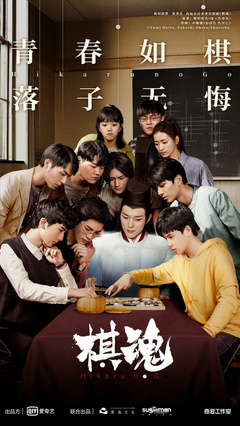
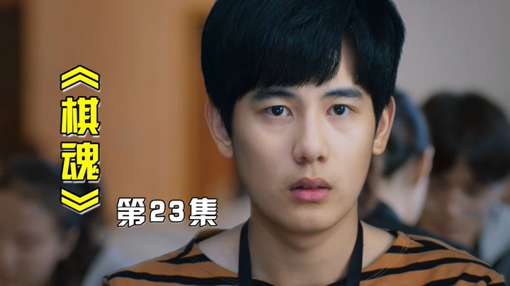
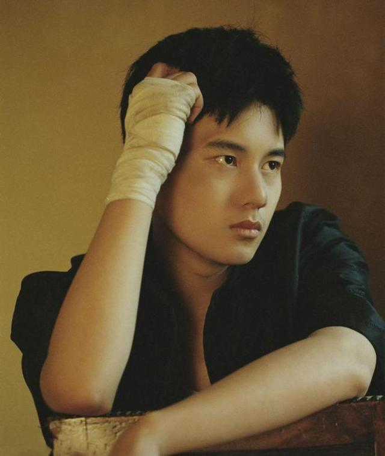
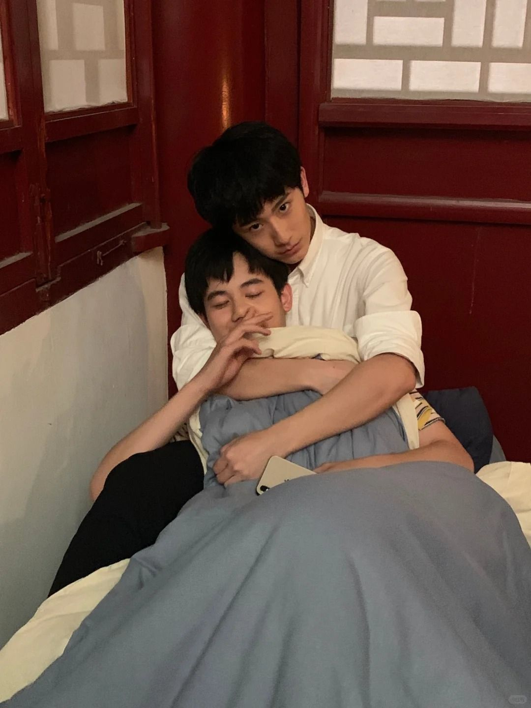
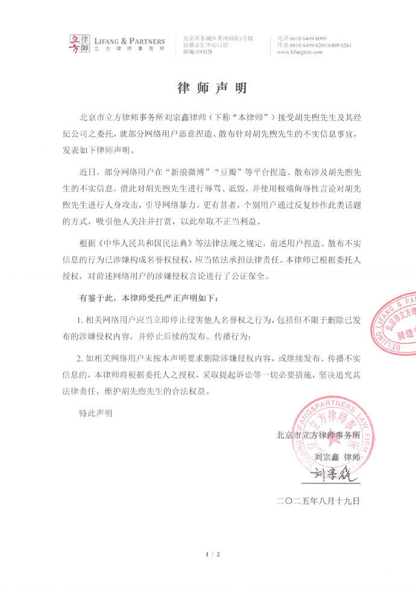
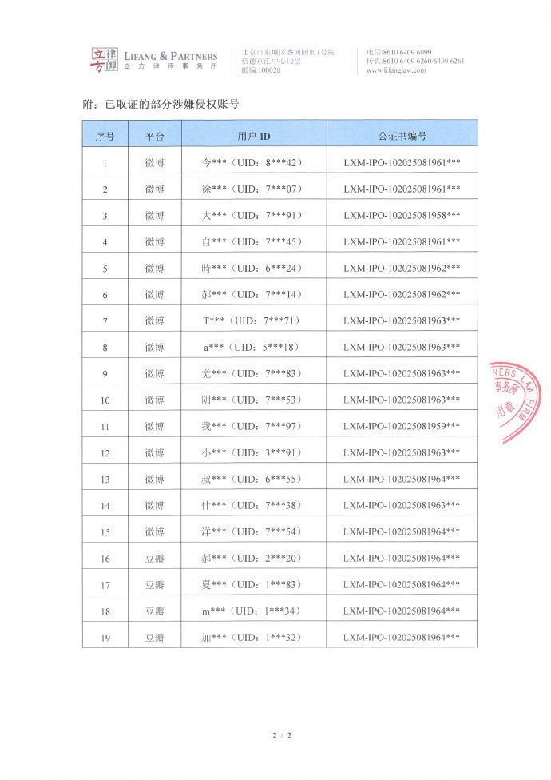
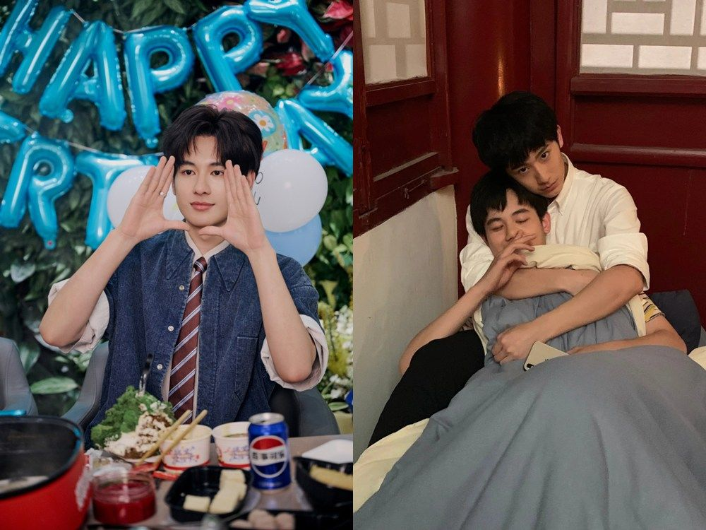
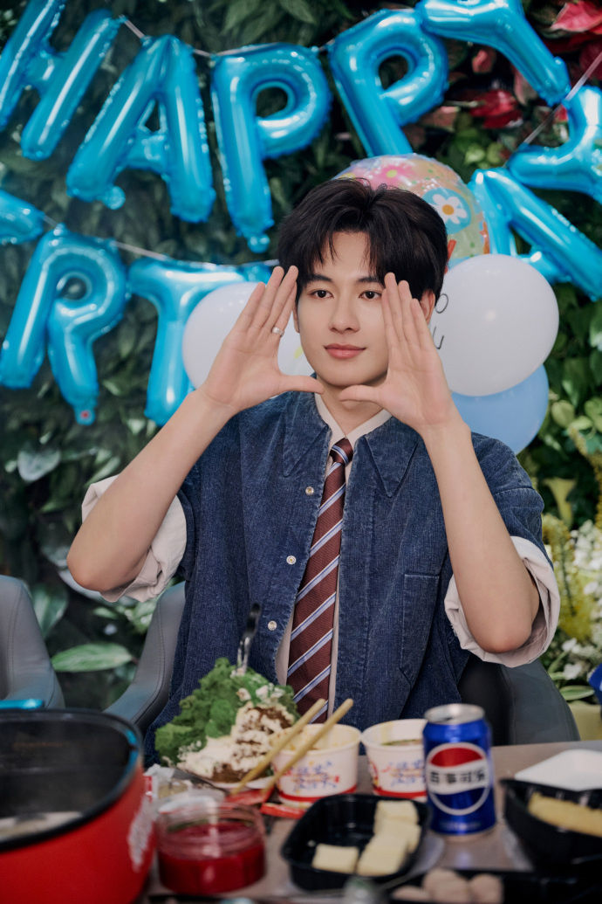

郝侧 POV
郝富申饰俞亮（塔矢亮对应），天才棋手、亦敌亦友线。拍摄期与胡先煦有对手戏与花絮互动——这是剧组物料层面，不是恋情声明。
NOT A FEUD · A TRIANGLE OF VIBES / FANS / LAW
郝富申 × 胡先煦 · 《棋魂》光亮 / 郝胡 · CP 粉自称「蚂蚁」
这不是「两位演员互撕」的故事。戏剧侧卖过氛围 → 粉丝自发磕 CP → 2021 郝侧恋情丑闻 → 胡营长期反腐切割 → 2025 律师函。下方每枚棋子都标了可核实 / 传闻。不虚构恋情，也不是李明德那条线。

郝富申饰俞亮（塔矢亮对应），天才棋手、亦敌亦友线。拍摄期与胡先煦有对手戏与花絮互动——这是剧组物料层面，不是恋情声明。
胡先煦饰时光（进藤光对应）。《棋魂》系日漫翻拍，围棋/青春励志奇幻，非耽改本。后文工作室反复强调：不愿走「卖腐蹿红」捷径。
坐标隐喻：右下星位附近落第一子——布局未定，气很足。
2020年10月27日—11月5日爱奇艺上线。角色「时光×俞亮」被粉圈配成「光亮」；演员层则被喊「郝胡」。CP 粉自称「蚂蚁」——这是粉丝社群命名，不是官方情侣认证。
三角的一边：剧宣花絮、互动短视频强化了「氛围感」；粉丝据此脑补戏外关系。氛围 ≠ 恋情证据。

「蚂蚁」「吃红利」等口号多见于饭圈互撕与复盘帖，非双方正式声明原文——本页标为传闻/口号层。
「我的确先后有过恋爱经历，但并非当下网络所流传的版本。由于我个人原因未能妥善处理好感情问题，对此我深感抱歉……最后向所有人说一声对不起！」
——郝富申 2021-05-27 致歉声明（媒体转载）
同日前后，《棋魂》官博因外包「小糖人」矩阵发花絮并配「郝胡虽然 be 了…」文案致歉。CP 叙事在丑闻冲击下碎裂；许多「蚂蚁」选择脱粉或转乐子。
棋理隐喻：这步像在天元掀劫——气紧，劫材开始出现。
剧组被指未经演员同意放出片场花絮、引导 CP。胡先煦工作室发长文批评制作方宣发理念分歧；强调不同意靠卖腐物料换热度。工作人员后有手写道歉称个人擅自发布。
长期姿态：此后胡营被粉圈描述为「长期反腐 / 杀 CP」——「反腐」在饭圈语里指抵制卖腐捆绑，不是反腐败纪委。请勿字面误读。

公开层面：双方少有同框营业；郝侧形象受 526 冲击；胡侧单人作品线推进。粉圈侧：二创、时间线盘点、AO3/超话仍在——形成「正主课题分离」的顽强 CP 生态（行业评论常用词）。
IDLE · 等待落劫

声明核心（媒体转述 on-record）：部分网友捏造不实情感谣言、人身攻击，侵犯名誉权与人格尊严；网络非法外之地。
来源：ETtoday / 中华网等 2025-08 报道



饭圈回击口号如「忘本」「敢说没吃过 CP 红利吗？」属网友言论层，非胡方法律文书原文。
棋盘：点天元可开「蚂蚁弹幕全息廊」；被提子落入右侧黑洞名单碗。
《娱乐资本论》等稿件将郝胡与其他「吃过 CP 红利再切割」案例并置：律师函 / 拉黑之后，部分粉转化为乐子人，用梗与控评占领评论区。这是媒介研究式观察，不是司法结论。
2026年1月，娱评博主转述：郝富申直播弹幕与贡献榜前列仍多见郝胡 CP 粉话术，主播侧显得难以互动。这属于平台现象转述，强度因场次而异，不作定量结论。
劫还没停：偶像要提纯，粉圈用弹幕续气——劫争仪的「气」在评论区循环。

把棋盘折起来：戏剧卖过氛围，粉丝写过平行宇宙，丑闻撕开滤镜，律师函划了法律边界。中间没有任何「官宣恋情」——只有可核对声明、报道，与大量饭圈口号。
落子无悔
复盘不能
郝胡不是互撕对手，是「氛围—粉圈—切割—法律」四劫循环里的两个坐标。
只存浏览器 localStorage · 不上传
以下为饭圈常见话术示意（非实时抓取），含祝福与回踩两极——点天元仅作交互寓言。